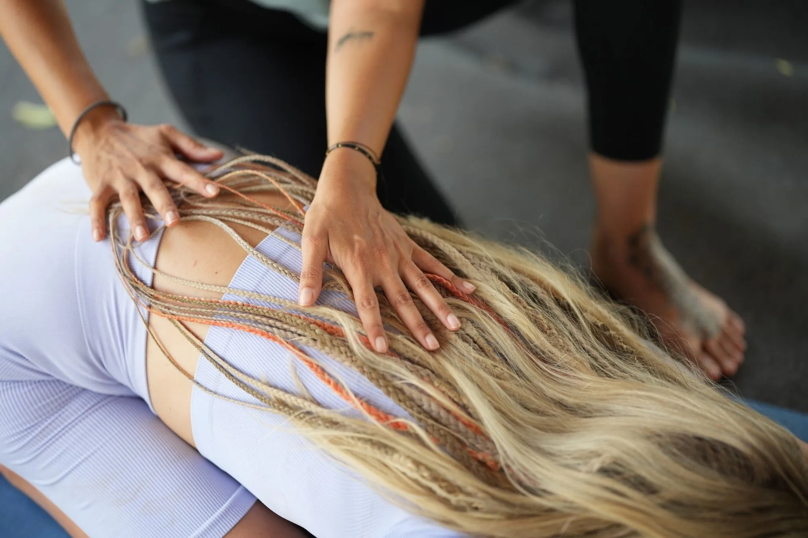

Domů / Dotek
Dotek, který tělu vrátí rovnováhu.
Intuitivní masáž: sportovní masáž, aromaterapie, dech a prvky thajské masáže v jednom. Zaměřuji se hlavně na záda, šíji, hlavu, hrudník a nohy.
Intuitivní masáž
Vědomý dotek
Moje intuitivní masáž kombinuje sportovní masáž, aromaterapii, práci s dechem a prvky thajské masáže. Není to jen mechanická technika. Je to vědomý dotek, který uvolní napětí, zklidní nervový systém a znovu tě propojí s vlastním tělem a dechem.
Každé setkání přizpůsobuji tomu, co tělo právě potřebuje. Někdy hlubší práce se svaly, jindy jemnější přístup k celkovému uvolnění. Začínáme krátkou konzultací, pak masíruji.
Jsem lektorka jógy a dlouhodobě pracuji s dechem a vědomým pohybem. Jako tanečnice i freediverka se učím vnímat tělo, rytmus a dech v hlubší rovině. Dotek je přirozeným rozšířením téhle práce.
Brzy v nabídce i thajská masáž na futonu.
Ceník
Kolik to stojí
- Intuitivní masáž · 45 minut + 10 minut konzultace800 Kč
- Intuitivní masáž · 60 minut + 10 minut konzultace1 000 Kč
Brzy v nabídce i thajská masáž na futonu.
Co říkají ti, kdo to zažili
Ráda bych touto cestou poděkovala za vynikající masáž. Moje zkušenost byla maximálně pozitivní, a to především díky tomu, že masáž byla zaměřena přesně na problematické partie (záda, lopatky, šíje), které mě dlouhodobě trápí. Oceňuji velmi citlivý, ale přitom účinný přístup. Podařilo se uvolnit i hluboké svalové napětí. Po návštěvě cítím výrazné povolení. Celková péče probíhala v klidném a příjemném duchu. Vřele doporučuji!
Cítíš napětí, které nechce povolit?
Napiš mi a domluvíme termín masáže.